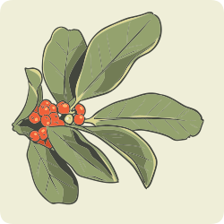

Alguns fitoterápicos aumentam a TMB e a termogênese e, com isso, o gasto calórico diário. Dessa forma é possível favorecer o déficit calórico, isto é, fazer o corpo gastar mais do que consome. Exemplos de plantas medicinais com ação termogênica.
Citrus aurantium (Rutaceae)
(laranja-da-terra)
Camellia sinensis (Theaceae)
(chá-verde)

Ilex paraguariensis (Aquifoliaceae)
(chá-mate)
Esses fitoterápicos podem ser usados por pacientes que apresentam obesidade associada à fadiga, pois são plantas que possuem substâncias estimulantes, como a cafeína, em sua composição. É necessário cautela em pacientes com hipertensão arterial.